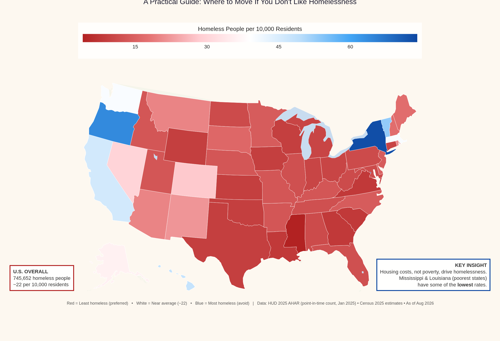

U.S. Overall
745,652
people counted as homeless
About 22 of every 10,000 residents. Source: HUD 2025 AHAR (January 2025 point-in-time).
Key Insight
Housing costs, not poverty, drive homelessness. That is why Mississippi and Louisiana — two of America’s poorest states — sit near the bottom of the rate scale.
Where the rates are lowest and highest
Lowest Rates (Red)
Best statistical signal if you want to minimize visible homelessness
- Mississippi4
- Georgia, Louisiana, South Carolina, Virginia8
- Texas, Iowa, Kansas, Oklahoma, Wyoming, Wisconsin9
- Michigan, Indiana, Ohio, Connecticut10
- Pennsylvania, Maryland, West Virginia, Alabama, North Dakota + several others11–12
Highest Rates (Blue)
Strongest “avoid if you dislike visible homelessness” signal
- District of Columbia74
- New York73
- Oregon64
- Vermont53
- Hawaii48
- California46
- Washington & Massachusetts40
- Alaska 36 · Nevada 30 · Colorado 28—
What the map actually shows
These are rates, not absolute counts. A populous state can have more total homeless people while still showing a lower rate than a smaller high-cost state.
The color pattern tracks housing costs and regulatory environment far more closely than overall poverty rates. That is the central factual takeaway from the HUD data.
For anyone in the High Tower District (or considering a move), the map is a clean comparative tool: red and light-red zones are where the per-capita numbers are lowest. Blue zones are where the rates — and the visible street disorder that often follows — are highest.
Sources
- U.S. Department of Housing and Urban Development, 2025 Annual Homelessness Assessment Report (point-in-time count of people in emergency shelter, transitional housing, safe havens, or unsheltered during the last 10 days of January 2025).
- U.S. Census Bureau, Vintage 2025 population estimates.
- Data current as of August 2026.
- Original visualization concept adapted from Visual Capitalist; recolored and rebranded by High Tower District for practical use.
High Tower District
Local eyes on local conditions. National data when it helps the neighborhood understand the wider pattern.